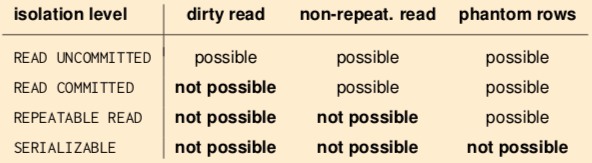

transaction: a sequence of actions we want to perform on a database
should be atomic: either run fully, or not at all. this avoids concurrency problems like:
- losing effects of one transaction due to uncontrolled overwrite by another ('lost update anomaly')
- transaction reads partial result of another transaction ('inconsistent read anomaly')
- transaction reads changes made by another transaction before they are rolled back ('dirty read anomaly')
- transaction reads value which is afterwards changed by another transaction ('unrepeatable read anomaly')
For this, we need to get some ACID:
- Atomicity: transaction executes fully or not at all (commit or abort)
- Consistency: transactions always leave database in consistent state, where all defined integrity constraints hold
- Isolation: multiple users can modify database at the same time without seeing partial actions
- Durability: when transaction is committed successfully, the data is persistent, regardless of crashes
transaction: a list of actions
- reads - R(O)
- writes - W(O)
- end with Commit or Abort
- e.g.: T₁: R(V)< R(Y), W(V), W(C), Commit
scheduler decides execution order of concurrent database access
schedule is list of actions from set of transactions ('plan on how to execute transactions'). order in which 2 actions of transaction T appear in schedule must be same as order in T.
serial schedule: if actions of different transactions are executed one after another (e.g. all of T2, then all of T1)
serializable schedule: if its effect on database is same as that of some serial schedule
actions in schedule conflict if they
- are from different transactions
- and involve same data item
- and one action is write
conflicts may cause schedule to not be serializable
conflict types:
- write read (WR) - T₁ writes Y, then T₂ reads Y
- read write (RW) - T₁ reads Y, then T₂ writes Y
- write write (WW) - T₁ writes Y, then T₂ writes Y
we can swap actions of different transactions if actions are non-conflicting.
conflict equivalent schedules: if they can be transformed into each other by swapping non-conflicting, adjacent transactions.
conflict-serializable: if conflict equivalent to some serial schedule
check it with a precedence graph:
- graph has node for each transaction
- edge from T₁ to T₂ if conflicting action between T₁ and T₂ (with T₁ first)
- conflict-serializable iff no cycle in the graph
- if no cycles, serial schedule is a topological sort of precedence graph
serializability during runtime: system doesn't know which transactions will run, and which items they'll access
strategies:
- Pessimistic: lock-based, timestamp based
- Optimistic: read-set/write-set tracking, validation before commit
- Multi-version techniques: eliminate concurrency control overhead for read-only queries
transactions must lock objects before using them
types:
- shared lock (S-lock): acquired on Y before reading Y, many transactions can hold a shared lock on Y
- exclusive lock (X-lock): acquired on Y before writing Y. transaction can hold exclusive lock on Y if no other transaction holds a lock on Y.
2 phase locking protocol:
-
each transaction must get:
- S-lock on object before reading it
- X-lock on object before writing it
- transaction can't get new locks once it releases any lock
- any schedule that conforms to 2PL is conflict-serializable
2 PL has the risk of deadlocks where both transactions wait for each other indefinitely. need to detect deadlock.
detection with Wait-for-Graphs
- system maintains wait-for-graph, where nodes are transactions and edges A→B mean A is waiting for B to release lock
- system periodically checks for graph cycles
- if cycle detected, you abort a transaction
-
selecting the victim is a challenge:
- if you abort a young one, there will be starvation
- if you abort an old one, you'll be throwing away what you invested in it
- phrasing, dude.
detection with timeout
- let transactions block on a lock request for a limited time
- after timeout, assume deadlock and abort T
cascadeless schedule
- delay reads, only read value produced by already committed transactions
- so if a value is required, wait for the commit
- no dirty reads, so abort doesn't cascade
recoverable schedule:
- delay commit - if T2 reads value written by T1, commit of T2 has to wait until after commit of T1
schedules should always be recoverable. all cascadeless schedules are recoverable.
same as 2PL, but a transaction releases all locks only when it's completed (commit/rollback). it's cascadeless, but still has deadlocks.
all needed locks are declared at start of transaction. therefore, no deadlocks. however, not applicable in multi-query transactions (where queries might depend on results of previous queries)
there's a tradeoff. the more specific your locking is (database, vs table, vs row level), the higher concurrency you have, and the higher overhead
multi-granularity locking - decide granularity of locks held for each transaction depending on characteristics of transaction
intention locks (do not conflict with each other):
- intention share (IS)
- intention exclusive (IX)
an intention lock on coarser level of granularity means there is S/X lock on finer level of granularity.
before a granule g can be locked in S/X mode, the transaction has to obtain an IS/IX lock on all coarser granularities containing g
after all intention locks are granted, transaction can lock g in the announced mode
levels of granularity: database → table → row
for each query in log:
-
analyse average time and variance for this type of query
- if long delays or frequently aborts, might be contention
-
read only or updating query?
- compute read-sets, write-sets
- will it require row/table locks? shared/exclusive?
How do read- and write-sets of queries intersect? What is chance of conflicts?
When you understand the query workload, you can:
- rewrite queries for smaller read- and write-sets
- change scheduling of queries to reduce contention
- use different isolation level for queries
some degree of inconsistency may be acceptable to get increased concurrency & performance
SQL-92 levels:
-
read uncommitted: only write locks acquired, any row read can be concurrently changed by other transactions -
read committed: read locks held for as long as application cursor sits on a current row, write locks as usual -
repeatable read: strict 2PL, a transaction may read phantom rows if it runs an aggregation query twice -
serializable: strict 2PL, multi-granularity locking. no phantom rows.

phantom row problem: T1 locks all rows, but T2 inserts new row that isn't locked.
solutions:
- multi-granularity locking (locking the table)
- declarative locking - key-range or predicate locking
many applications don't need full serializability, selecting a weaker but acceptable isolation level is part of database tuning.
hope for the best, only check that no conflicts happened when committing. this saves locking overhead.
three phases:
- Read phase: execute transaction, but don't write data to disk. collect updates in transaction's private workspace
- Validation phase: when transaction wants to commit, DBMS test whether execution correct, and abort if needed.
- Write phase: transfer data from private workspace into database.
Phases 2, 3 have to be in non-interruptible critical section (val-write phase).
typically implemented by maintaining:
- read set RS(Tk) - attributes read by Tk
- write set Ws(Tk) - attributes written by Tk
Backward-oriented optimistic concurrency control (BOCC)
- on commit, compare Tk against all committed transactions Ti
-
succeeds if
- Ti committed before Tk started
- or Rs(Tk) ∩ WS(Ti) = Ø
Forward-oriented optimistic concurrency control (FOCC)
- on commit, compare Tk against all running transactions Ti
-
succeeds if
- Ws(Tk) ∩ RS(Ti) = Ø
with old object versions around, read-only transactions never need to be blocked
- might see outdated but consistent version of data
- like everything in query happened the moment it started
issues:
- versioning requires space and management overhead
- update transactions still need concurrency control
snapshot isolation:
- each transaction sees consistent snapshot of database corresponding to state at moment it started
- read-only transactions don't have to lock anything
-
transactions conflict if write to same object
- pessimistic concurrency control - only writes are locked
- optimistic concurrency control - only write-sets interesting
- does not guarantee serializability
- avoids dirty read, unrepeatable read, phantom rows
- introduces write skew, with complex assertions involving multiple tuples